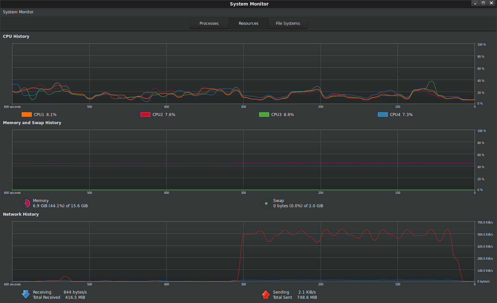
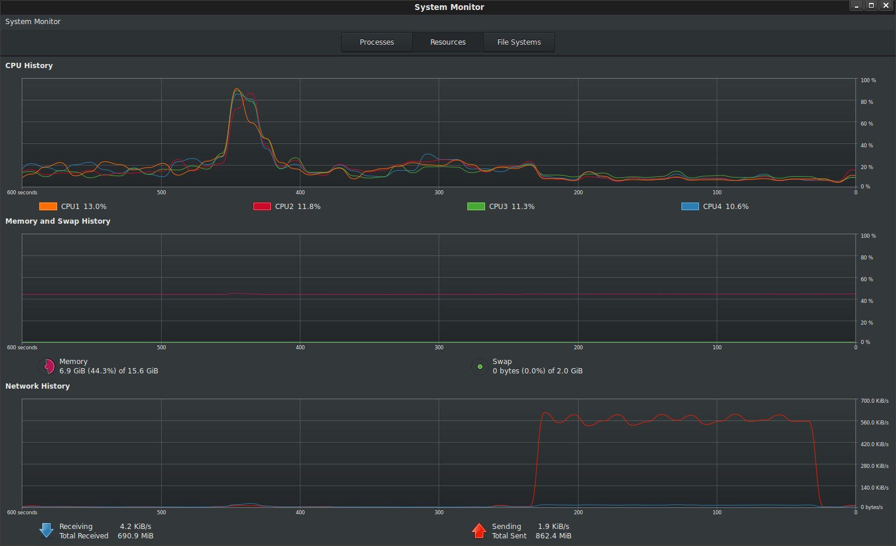

ARTICLES
GPG stream encryption and decryption on Google Cloud Functions and Cloud Run
About a year+ ago a colleague of mine (Daz Wilkin) asked me how best to decompress/unzip a file using Google Cloud Functions. The suggestion ended as a sample he provided demonstrating the stream-read->stream-write pattern with the pertinent input-outputs (input: unziped file; output zipped file). The distinct advantage of stream processing the unzip function is that the data is never held in memory: as the unzipped content gets processed by GCF, its promptly written as a zip file to GCS. He further went on to expand that sample implementation in golang (and as a side note, I take credit for suggesting the ‘exploder’ name in the first article and the Caddyshack gopher in the second).
So, a couple weeks ago another colleague asked how PGP encrypt a file using Cloud Functions. Well, as you can imagine, you can apply the same stream technique there as well. This article lifts Daz’s code in golang and uses GPG libraries to encrypt or decrypt a file on GCS.
Note: I know perfectly well GCS has Customer Supplied Encryption keys as well as KMS backed keys to do encryption hands free; this article is just an exercise demonstrating the stream-read-write capability with golang-PGP. The intent is for you to expand this pattern for other stream processing systems with Cloud Functions or Cloud Run.
This article shows how to deploy a GPG Encryption and Decryption functions that read in a file in GCS, and as the names suggests, performs the named operations against the source file provided.
You can find the source here
References
Some really useful links to cite that helped with this article * GPG Encryption Sample in Golang * Stream IO in golang * Daz’s Cloud Storage “Exploder’ * Goland OpenPGP
Installation
The following is just a sample that uses symmetric encryption (password-based). You can use the same technique and sample set to do asymmetric encrption as well.
Setup
Ok, lets get started. First we’ll create a couple of GCS buckets:
export GOOGLE_PROJECT_ID=`gcloud config get-value core/project`
export BUCKET_SRC=`gcloud config get-value core/project`-gpg-src
export BUCKET_DEST=`gcloud config get-value core/project`-gpg-dest
export BUCKET_DEST_DEC=`gcloud config get-value core/project`-gpg-dest-dec
gsutil mb -c regional -l us-central1 -p ${GOOGLE_PROJECT_ID} gs://${BUCKET_SRC}
gsutil mb -c regional -l us-central1 -p ${GOOGLE_PROJECT_ID} gs://${BUCKET_DEST}
gsutil mb -c regional -l us-central1 -p ${GOOGLE_PROJECT_ID} gs://${BUCKET_DEST_DEC}
The source bucket (BUCKET_SRC) hosts plaintext files uploaded. On upload that triggers the Encrypt function which writes the file to the BUCKET_DEST bucket. Once the encrypted file is finalized, the Decrypt GCF function is automatically triggered. The decrypted file gets written to the BUCKET_DEST_DEC bucket. Essentially, this shows the full encrypt-decrypt cycle with GCF.
Deploy functions
Deploy the GCF functions and set the maximum timeout (so that the function can encrypt/decrypt as much as possible)
gcloud functions deploy Encrypter --entry-point=Encrypter --runtime go111 \
--trigger-resource=${BUCKET_SRC} --set-env-vars=BUCKET_DST=${BUCKET_DEST} \
--trigger-event=google.storage.object.finalize --project=${GOOGLE_PROJECT_ID} \
--timeout=540s --memory=256MB
gcloud functions deploy Decrypter --entry-point=Decrypter --runtime go111 \
--trigger-resource=${BUCKET_DEST} --set-env-vars=BUCKET_DST=${BUCKET_DEST_DEC} \
--trigger-event=google.storage.object.finalize --project=${GOOGLE_PROJECT_ID} \
--timeout=540s --memory=256MB
Test Encryption/Decryption
Verify buckets are empty (yeah, we just created them)
$ gsutil ls gs://$BUCKET_SRC $ gsutil ls gs://$BUCKET_DEST $ gsutil ls gs://$BUCKET_DEST_DEC- Crate plaintext file
Either:
bash $ echo "plain text stuff" > plain.txt
- Crate plaintext file
Either:
or generate random stuff:
base64 /dev/urandom | head -c 100000000 > plain.txt
Upload plaintext file
$ gsutil cp plain.txt gs://$BUCKET_SRC/- Repeatedly check when the encrypted file is finalized:
bash $ gsutil ls gs://$BUCKET_DEST
- Repeatedly check when the encrypted file is finalized:
You should see a file with the
.encsuffix as its hardcoded into the GCFEncryptionfunctiongs://$BUCKET_SRC-gpg-dest/plain.txt.enc- Copy the file down and check its actually encrypted
bash $ gsutil cp gs://$BUCKET_SRC-gpg-dest/plain.txt.enc .
- Copy the file down and check its actually encrypted
Check file encryption:
$ more plain.txt.enc -----BEGIN PGP MESSAGE----- wy4ECQMIRpvX4dV/FQVgAQp2Q4ABp2oFhQP6JZ6W175kMWfr2s25EGmiUFiaX4hN 0uAB5Gpy1Yvolo5/0uf36tR4f/Hh6ZrgneAi4aru4HHioMluEeA25GsuEEprL1gU MF0YEoHtGcjgfuBl4H3k9sURYHLxkq1qdfG+H1UQaOJRbdcw4ci7AA== =cGor -----END PGP MESSAGE-----
(yep, it is)
Check for decrypted file at destination decryption bucket
$ gsutil ls gs://$BUCKET_DEST_DEC gs://$BUCKET_DEST_DEC-gpg-dest-dec/plain.txt.enc.dec- Download the source file and verify its the same
$ gsutil cp gs://$BUCKET_SRC-820-gpg-dest-dec/plain.txt.enc.dec . $ more plain.txt.enc.dec plain text stuff
Soo..what just happened
The trick is to all this is stream IO…the bytes encrypted and decrypted are processed as a stream as they come in and promptly get sent out…not much stays in memory (certainly not the full file!)
In a very basic way
GCS File->(GCS Stream)–>(Encrption Stream)->(GCS Stream)->GCS FileGCS File->(GCS Stream)–>(Decryption Stream)->(GCS Stream)->GCS File
Encryption
- Create a Reader for the source file that was uploaded
func Encrypter(ctx context.Context, event Event) error {
gcsSrcReader, err := gcsSrcObject.NewReader(ctx)
Setup the target object to write to,
gcsDstObject := dstBucket.Object(event.Name + ".enc") gcsDstWriter := gcsDstObject.NewWriter(ctx)- Setup an
io.Pipeintermediary
ok, so why are we doing this? We need to redirect and gcs plaintext reader (
gcsSrcReader) in such a way that its written to theSymmetricallyEncryptplaintext io.WriteCloser. Once the data cleartext is written in, we need to take its output as a reader that will again feed into the GCS destination writer...and we need to do all this without having all the file
bytes[]completely in memory on either side; we just need the fraction in transit. How we do this is creating a pipe betweenopenpgpand both [gcsSrcWriter,gcsDstWriter] on either side.so given the definition
Encode func(out io.Writer, blockType string, headers map[string]string) (w io.WriteCloser, err error) SymmetricallyEncrypt func(ciphertext io.Writer, passphrase []byte, hints *FileHints, config *packet.Config) (plaintext io.WriteCloser, err error) Pipe func() (*PipeReader, *PipeWriter) Pipe creates a synchronous in-memory pipe. It can be used to connect code expecting an io.Reader with code expecting an io.Writer.- Setup an
we read in a stream, establish pipes (pipeeader, pipewriter) to glue and openpgp methods outputs for encryption then finally write out again as a stream:
pipeeader, pipewriter := io.Pipe()
go func() {
defer pipewriter.Close()
encodeWriteCloser, err := armor.Encode(pipewriter, "PGP MESSAGE", nil)
plaintext, err := openpgp.SymmetricallyEncrypt(encodeWriteCloser, password, nil, packetConfig)
io.Copy(plaintext, gcsSrcReader)
plaintext.Close()
wm.Close()
}()
n, err := io.Copy(gcsDstWriter, pipeeader)
gcsDstWriter.Close()
Decryption
Decryption is easier to pipe than Encryption since the decrypted data is already a reader:
(messagedetails.UnverifiedBody << returns a Reader already)
- Create source/destination object reader and writers:
srcBucket := gcsClient.Bucket(event.Bucket)
dstBucket := gcsClient.Bucket(p.function.sink)
gcsSrcObject := srcBucket.Object(event.Name)
gcsSrcReader, err := gcsSrcObject.NewReader(ctx)
defer gcsSrcReader.Close()
gcsDstObject := dstBucket.Object(event.Name + ".dec")
gcsDstWriter := gcsDstObject.NewWriter(ctx)
- Set the source reader into GPGs decryption
armorBlock, err := armor.Decode(gcsSrcReader)
- Read and decrypt the source into the target
md, err := openpgp.ReadMessage(armorBlock.Body, nil, prompt, packetConfig)
n, err := io.Copy(gcsDstWriter,md.UnverifiedBody)
gcsDstWriter.Close()
Limits
There are always limits to everything…at the lowest level in this case, its the amount of time a given cloud function can run: a GCF function can run at most 9 minutes so whatever size of file you submit, it must fit into that window
Since the encrption/decryption is CPU bound, you can select different memory profiles depending on how fast you need it proccessed at cost.
The above deployment and latency below uses --memory=2048MB
For example,
- symmetric encryption and decryption of various file sizes with a GCF default memory allocation of
256MB
Which by extrapolation means you can at most process little over 1GB file for Encryption and maybe 1.5GB file for decryption (why the asymmetry, i dont know enough math or there’s a subtle issue with implementation).
These are limits on GCF but if you choose to host it on another platform like GCE or GKE, you can process an arbitrary large file with this technique.
Local Testing
Ive attached a standalone application standalone/main.go which does the full encryption/decryption pipeline in sequence against the local filesystem or to GCS. Use that sample app to test/verify and experiment with the pipe IO.
The following shows a local plain text file of size 100MB encrypted and transmitted to GCS from my laptop.
Note there is no change in memory usage footprint during the transfer: all the bytes read from file and uploaded to GCS happens over the stream

The following shows a local encrypted file of size decrypted and transmitted to GCS from my laptop

Deploying to Cloud Run
You can also deploy to Cloud Run
cd standalone/
edit main.go, change bucketName
then build, push, deploy
docker build -t gcr.io/<projectID>/gpgtest
docker push gcr.io/<projectID>/gpgtest
gcloud beta run deploy --image gcr.io/<projectID>/gpgtest --region=us-central1 --allow-unauthenticated --memory=128M
Finally invoke the cloud run deployment paths
/encrypt?filename=plain.txt/decrypt?filename=plain.txt.enc
Conclusion
As before, this is just a sample showing how to stream-read-write…using openpgpg was really just a side show.